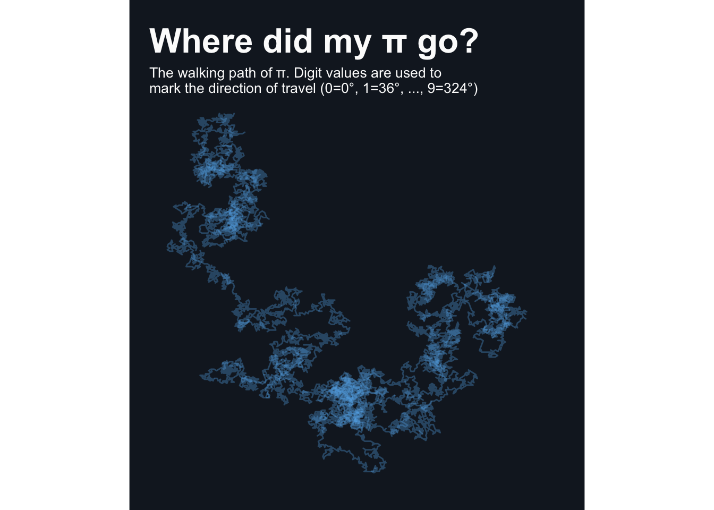
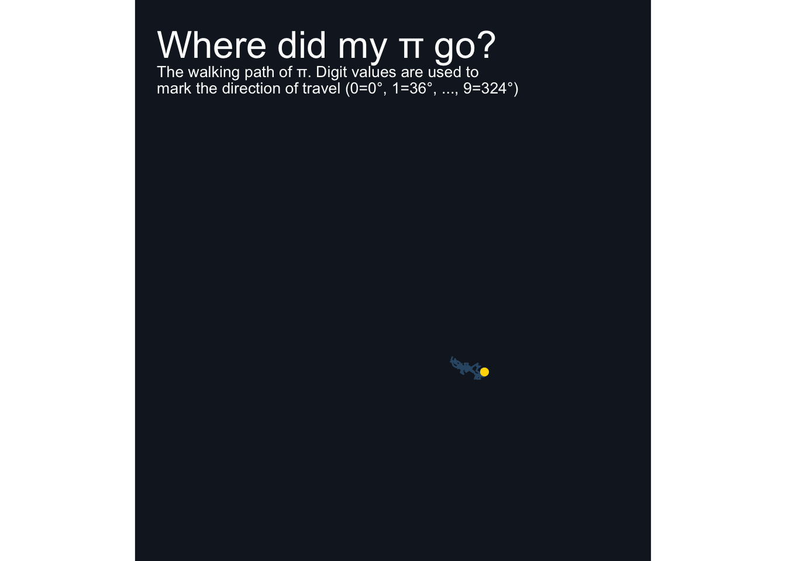
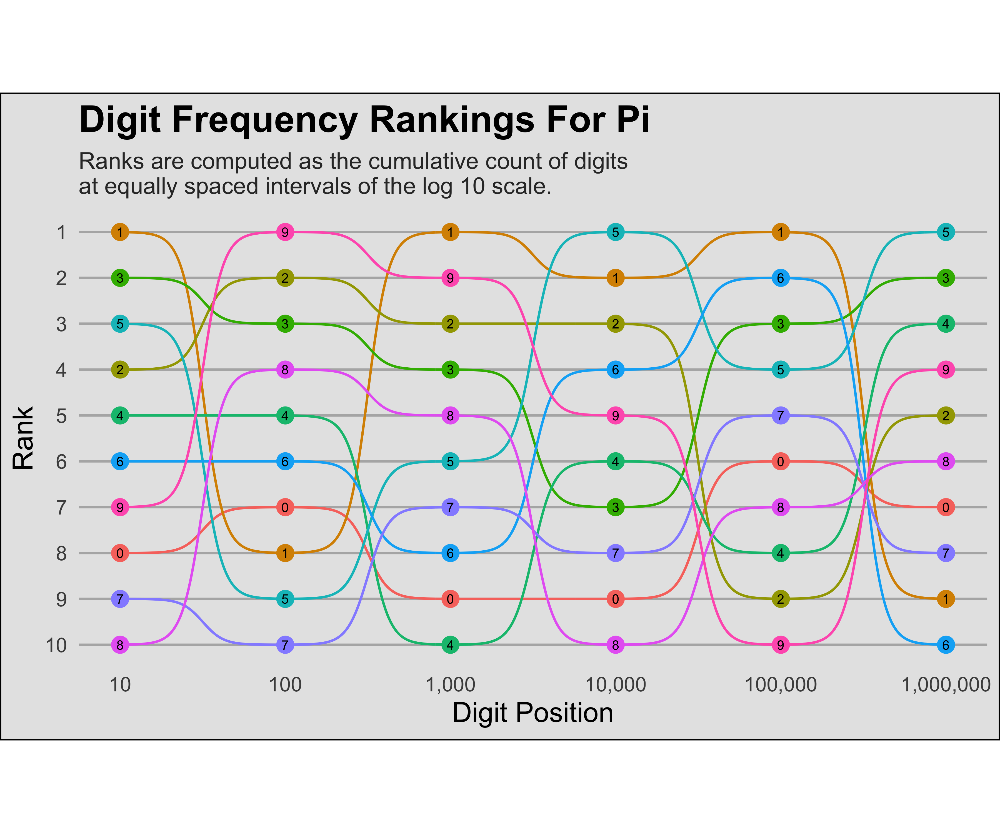

# Packages
library(tidyverse)
# Load data
tuesdata <- tidytuesdayR::tt_load('2026-03-24')
# Extract data
pi_digits <- tuesdata$pi_digitsOne Million Digits of Pi
tidytuesday
Link to data: TidyTuesday
“Pi is an irrational number, meaning its decimal representation never ends and never settles into a permanent repeating pattern.”” — Eve Andersson, collector of the one million digits dataset
I saw a great post by Steven Ponce on Bluesky showing the walking path of pi using the the digits to as compass directions. I decided to recreate the concept of this visualization, as well make my own contribution.
Walking Path of π
0. Data
1. Data Cleaning
A compass has 360 degrees, which can be divided into 10 increments of 36 degrees. Assigning digits to these increments provide directions, where 0 = 0°, 1 = 36°, …, and 9 = 324°.
With directions assigned, the next step is to figure out the positioning of each step. If \(\theta\) represents the direction, the X-Y displacement is given by:
- x-displacement: \(\cos(\theta)\)
- y-displacement: \(\sin(\theta)\)
Here, R requires that \(\theta\) be represented by radians, meaning that we first need to transform our degrees, \(D\) into radians using \(D\times \frac{\pi}{180}=\theta\). After getting the X and Y displacements, the cumulative sum along the digits
Code
# Define the direction in degrees and radians
step_directions <- data.frame(
digit = 0:9,
degree = seq(0, 360-36, l = 10) #Note: 360 is the same as 0
) %>%
mutate(
radian = degree*pi/180
)
# Set end point to set the number of digits
end_spot <- 10000
# Create the walking path
pi_walk <- pi_digits %>%
left_join(step_directions, by = 'digit') %>%
mutate(displacement_x = cos(radian),
displacement_y = sin(radian),
pos_x = cumsum(displacement_x),
pos_y = cumsum(displacement_y)) %>%
filter(digit_position <= end_spot)3. Visualization
Code
p_walk <- pi_walk %>%
ggplot(mapping = aes(x = pos_x, y = pos_y)) +
geom_path(alpha = 1/3, color = '#63B3ED') +
# Aethestics
labs(title = "Where did my π go?",
subtitle = 'The walking path of π. Digit values are used to\nmark the direction of travel (0=0°, 1=36°, ..., 9=324°)',
caption = '') +
theme_void() +
theme(aspect.ratio = 1,
plot.background = element_rect(fill = '#151D28', color = 'black'),
plot.margin = margin(1/2, 1, 0, 1/2, "cm"),
plot.title = element_text(color = 'grey99', face = 'bold', size = 24),
plot.subtitle = element_text(color = 'grey99', size = 10))
p_walk
4. Adding Animations
The static chart above shows the complete path, but we can make it more engaging by animating it with the gganimate package. I also included a point to clearly show the current position of the walking path:
Code
# Load package
library(gganimate)
# Update previous plot
p_animate <- p_walk +
geom_point(color = 'gold', size = 2) +
transition_reveal(digit_position) +
ease_aes('linear')
# Animate!
animate(p_animate, nframes = 100, end_pause = 10, rewind = TRUE)
Bump Chart
Many visualization of pi tend to focus on the distributions of digits. While this gives an idea of how often a specific digit is represented, we can show how this changes over time with a bump chart for the ranking of counts.
The ggbump package works well here, but is no longer available on CRAN. Either the archive version of this package can be downloaded, or the development version from GitHub.
A clear issue with 1 million positions is that the there will be 10 million data points. This is excessive, so I decided to only show ranks along the log base 10 scale. This seems to add clarity in the resulting chart, which is better than showing every value.
1. Data Cleaning
Code
# Set upper limit of digits (for testing purposes of smaller dataset)
n_digits <- nrow(pi_digits)
# Get all digits for all positions (10 million rows!)
pi_markers <- pi_digits %>%
filter(digit_position <= n_digits) %>%
expand(digit_position, digit2 = digit)
# Get cumulative counts at each position and rank by count
pi_ranks <- pi_digits %>%
filter(digit_position <= n_digits) %>%
full_join(pi_markers) %>%
mutate(match = as.numeric(digit == digit2)) %>%
group_by(digit2) %>%
mutate(total = cumsum(match)) %>%
select(digit_position, digit2, total) %>%
group_by(digit_position) %>%
mutate(rank = rank(-total, ties.method = 'first')) #negative so 1 = largest count
# Remove markers to clear some memory
rm(pi_markers)2. Visualization
Code
#devtools::install_github("davidsjoberg/ggbump")
library(ggbump)
library(scales)
breaks <- 10*10^c(0:10)
p_bump <- pi_ranks %>%
filter(digit_position %in% breaks) %>%
# Base chart
ggplot(mapping = aes(x = digit_position, y = rank,
group = digit2, color = factor(digit2))) +
geom_bump() +
geom_point(size = 3) +
geom_text(aes(label = digit2), color = 'black', size = 2) +
# Aesthetics
scale_y_reverse(breaks = 1:10) +
scale_x_log10(breaks = breaks, labels = comma) +
labs(
x = 'Digit Position',
y = 'Rank',
title = 'Digit Frequency Rankings For Pi',
subtitle = 'Ranks are computed as the cumulative count of digits\nat equally spaced intervals of the log 10 scale.'
) +
theme_minimal() +
theme(
aspect.ratio = 1/2,
legend.position = 'none',
panel.grid.minor = element_blank(),
panel.grid.major.x = element_blank(),
panel.grid.major.y = element_line(color = 'grey70'),
plot.title = element_text(face = 'bold', size = 16),
plot.subtitle = element_text(size = 10, color = 'grey20'),
axis.title = element_text(size = 12, color = 'black'),
plot.background = element_rect(color = 'black', fill = 'grey90')
)
p_bump